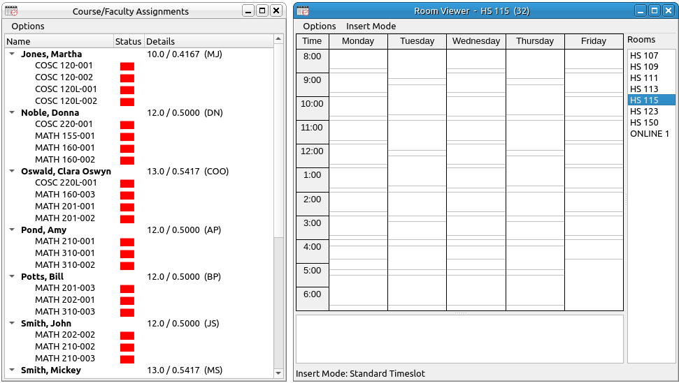

Constructing a Schedule
The first time you create a schedule will be the longest since you will need to populate each of the databases. After that the process will be much shorter, simply use a previous schedule and make changes to it.
The First Schedule
The first time you make a schedule follow the procedure below.
- Populate the courses database with the information for each course offered by your department, or at least all the courses you would be putting on this schedule.
- To open the course addition dialog box either select from the main menu Edit > Add to Databases > Add New Courses... or open the course list subwindow (View > Course List, or the toolbar) and select Options > Add New Courses... from the subwindow menu.
- At this point the Add New Courses dialog will appear, as below.
- This dialog, as with most of the database addition and edit dialogs, uses a table style input. Any column that has an * in the header is a required field. The Code is the course discipline code used by the university, such as, MATH, MAT, COSC, CS, BIOL, ... The number is the number of the course, such as 101, 459, ..., the number need not be numeric, so 101H would be legitimate. The Title is the title of the class, such as Calculus I, CS I, Introduction to Physics, ... The Minutes/Week is the number of minutes that the course is to meet per week. For example, many universities consider a credit hour to be 50 minutes of meeting time, so for a 3 credit class this would be 150, and for a 4 credit course it would be 200. Finally, the workload hours is the number of hours to be given to the faculty member to meet their semester workload. Most institutions use credit or contact hours for this. The minutes and workload hours can be decimal values.
- You can highlight lines and use the familiar Ctrl+C and Ctrl+V to copy and paste entries into lines and edit them.
- The dialog box allows for the input of up to 100 new classes. If you have more than that, fill out the first 100 and click OK, then reopen the dialog to add in the rest.
- You do not need to fill in each line, just as much as you need. If a line is left blank it will be ignored. On the other hand, if an entry is on a line is started then all entries in that line must be filled in.
- When you are finished simply click the OK button to load the new courses into the course database.
- Populate the faculty database with information about each of the faculty members in your department.
- To open the faculty addition dialog box either select from the main menu Edit > Add to Databases > Add New Faculty... or open the course/faculty assignments subwindow (View > Course/Faculty Assignments, or the toolbar) and select Options > Add New Faculty... from the subwindow menu.
- At this point the Add New Faculty dialog will appear, as below.
- For this dialog the required fields are just last and first name along with a short designation, something like the person's initials. The last, first, and middle names are fairly self-explanatory. The suffix is something like Jr. II, IV, ... The short designation is something that is only a few characters long but can uniquely represent the person, for example, their initials. The short designation appears in the viewers, so it should not be very long. The ID could be their employee ID at the university, but it is free form text and could be anything you wish to use. The Real column deserves some explanation. If this is left blank the default is Y (yes). If you input an n or N it will use (no). If a faculty member is real the program will make sure that there are no time conflicts with courses the professor is teaching. If this is set to no then there will be no time conflict checks for this professor. In most cases the professor will be real. One case where you might set this to no is for a general staff position that could be a placeholder instructor for courses that need to be scheduled.
- You can highlight lines and use the familiar Ctrl+C and Ctrl+V to copy and paste entries into lines and edit them.
- The dialog box allows for the input of up to 100 new faculty members. If you have more than that, fill out the first 100 and click OK, then reopen the dialog to add in the rest.
- You do not need to fill in each line, just as much as you need. If a line is left blank it will be ignored. On the other hand, if an entry is on a line is started then all required entries in that line must be filled in.
- When you are finished simply click the OK button to load the new faculty members into the faculty database.
- Populate the standard timeslots database with information about each of the usual timeslots used by your university and/or your department.
- To open the timeslot addition dialog box either select from the main menu Edit > Add to Databases > Add New Standard Timeslots... or open the timeslots subwindow (View > Timeslot List) and select Options > Add New Standard Timeslots... from the subwindow menu.
- At this point the Add New Timeslots dialog will appear, as below.
- Each of the fields here are required. The days are the day codes for the days in the week that the slot covers. These are single characters for each day and used together with no spaces constitutes the day code. For example, MWF is Monday, Wednesday, and Friday. Similarly, TR is Tuesday and Thursday. In general, M = Monday, T = Tuesday, W = Wednesday, R = Thursday, F = Friday, S = Saturday, and U = Sunday. Start Hour is the hour that slot starts on, using a 24-hour clock. So 8 would be 8 AM and 15 would be 3 PM. Start minute is the minute of the hour for the start time 0-59. Same is true for the end hour and minute.
- You can highlight lines and use the familiar Ctrl+C and Ctrl+V to copy and paste entries into lines and edit them.
- The dialog box allows for the input of up to 100 new timeslots. If you have more than that, fill out the first 100 and click OK, then reopen the dialog to add in the rest.
- You do not need to fill in each line, just as much as you need. If a line is left blank it will be ignored. On the other hand, if an entry is on a line is started then all required entries in that line must be filled in.
- When you are finished simply click the OK button to load the new timeslots into the standard timeslots database.

- Populate the rooms database with information about each of the rooms used by your department.
- To open the room addition dialog box either select from the main menu Edit > Add to Databases > Add New Rooms... or open any room viewer subwindow (View > Room Viewer) and select Options > Add New Rooms... from the subwindow menu.
- At this point the Add New Rooms dialog will appear, as below.
- The required fields here are the building code, room number, and the capacity (maximum number of students the room supports). The designation field is free form text and can be used for anything. In most cases this might be something like Lab, Seminar, ... The real field is similar to the real field for a professor. If this is yes (the default) then the program will make sure that there are no time conflicts in the room. If it is no (n or N input) then conflicts will not be checked. This might be set to no if the "room" is an online designation or a remote designation for the course.
- You can highlight lines and use the familiar Ctrl+C and Ctrl+V to copy and paste entries into lines and edit them.
- The dialog box allows for the input of up to 100 new rooms. If you have more than that, fill out the first 100 and click OK, then reopen the dialog to add in the rest.
- You do not need to fill in each line, just as much as you need. If a line is left blank it will be ignored. On the other hand, if an entry is on a line is started then all required entries in that line must be filled in.
- When you are finished simply click the OK button to load the new rooms into the room database.
- At this point you are done with the initial database loading. For your next schedules you will not need to go through this process again. Instead, you will load in a previous schedule file, edit the above databases by adding or deleting items and then begin the process below.
- Scheduling with this program is a two-step process. First assign courses to professors, and then second, put these courses into rooms and times.
- For the first stage, open the Course List window and the Course/Faculty Assignments window.
- Drag the course from the Course List window to the Course/Faculty Assignments window and hover over the professor you wish to assign the course to. For example, if we drag MATH 201 over to Amy Pond the result in the windows is below. Note that the MATH 201 course has been added to Amy Pond's course assignment, her workload is increased accordingly, and the Course Viewer has added the section. Also note that a section number has been automatically generated. Section numbers are of the form 001, 002, 003,... You can change these to anything as long as they do not conflict. They are not restricted to be numeric either, so a section of 004H is perfectly fine. You can change the section number in the course properties dialog or in the section number editor.
Once the classes are assigned to the professors the Course/Faculty Assignments window should look something like the following. You are ready for the second phase of scheduling. Note that you can add and delete classes or faculty members at any time in the process, the two scheduling phases are not forced to be sequential.
- Before moving onto phase two you will want to link the courses that depend on each other, for example, lecture classes with lab classes. Many departments at a university will not have any linked classes, but it is common in the sciences to set up a single lecture class with multiple lab classes. If your department does not need to set classes up in this manner you can skip to phase two. If you do, then you definitely want to go through the linking process. All this really does in the scheduler program is make sure you do not get a time conflict between lecture and lab courses.
- Open the Course Linker window by selecting View > Course Linker from the main menu or click the corresponding toolbar button. You will see three lists, the top two are the main class and the subsequent classes lists and the one at the bottom is the list of all linked classes you have created. Simply select a single main class on the left and on the right all the subsequent classes associated with this main class, then select Options > Link Courses from the subwindow's menu (or Ctrl+L). The courses you selected will be removed from the top selection lists and a new entry will appear in the list of linked courses that shows the main class with the linked courses below it, see the image below. You can unlink classes as well by selecting the courses in the linked list and then selecting Options > Unlink Courses from the subwindow's menu (or Ctrl+U). When you do this the classes will be added back into the two selection lists at the top.
- The second phase is to put the courses into rooms and times. This is also done with a quick drag and drop between the Course/Faculty Assignments window and any open Room Viewer window. Depending on how you set up your standard timeslots you may need to do some adjustments using the course properties dialog box.
- Keep the Course/Faculty Assignments window open and open one or more Room Viewer windows, you can do that with View > Room Viewer from the main menu or click the corresponding toolbar button.
- You will see a list of all the rooms you input when populating the room database. Click on the room you want to place the course, and you will see a weekly schedule that has all the current classes for that room and the standard timeslots you added into the timeslot database. When you drag and drop a class into a room the way it is placed into the depends on the Insert Mode setting. These are discussed in more detail in the section on the Room Viewer window. For now, we will leave the setting on the default Standard Timeslot. When you drag the course over the Room Viewer the drop targets will be highlighted in gray. So releasing the mouse button will place the class in those positions. The program automatically checks that the drop positions do not conflict with other classes in the room or classes that are in the professor's schedule. In addition, it makes sure that there is no conflicts with linked courses.
 - If we drag Donna Noble's MATH 155 class to the 11 AM slot and Clara Oswald's MATH 201 class to the 9 AM slot the windows will look like the following. Note that the MATH 155 class is in green both in the Course/Faculty Assignments list and in the Room Viewer weekly layout. This class is a three credit course that requires 150 minutes of scheduled time and that is what it was just scheduled for, so it is good to go. The MATH 201 class is a four credit class which requires 200 minutes of scheduled time, and it currently has only 150 minutes, so its color in both the room viewer and assignment list is yellow (partially scheduled). If we had dropped it into a standard timeslot that had 200 minutes then the course would have been fully scheduled and in green. Also note that the Details column in the assignments list displays the timeslot you just dropped the course into.
- If you left the Course List window open you will also notice that it added the room capacity to the enrollment maximum for both MATH 155 and MATH 201.
- To add in that fourth hour into the MATH 210 above you have a couple options. You can do another drag of that course from the Course/Faculty Assignments to any room viewer (and any room selection), you will want to set the Insert Mode to something that will only place that last 50 minutes (such as one of the 50-minute options or a block with contact hour truncation). Alternatively, you can double-click the MATH 201 class in either the assignments list, weekly view, or the course listing for the room at the bottom of the room viewer. This will bring up the course properties dialog which allows you to edit any aspect of a class. We discuss this in more detail in the section devoted to the course properties dialog.
- Note that you can drag and drop classes from one room viewer to another and within the same room viewer to do schedule adjustments. Note that when you do a drag from one slot to another it will remove the course from the slot(s) it was in. Linked courses are not affected when another linked course or main course is moved.
- If you start a drag and decide that you do not want to drop it anywhere move the mouse to a position outside any of the Room Viewer windows, say to the empty "desktop" area of the program, and release the mouse button. This will cancel the drag and drop action.
- If you have overlapping standard timeslots, and you do a drop in a common position there will be a pop-up menu at the drop position listing all the available slots at that position, simply choose the one you want.
- When you are finished you will see something like the following image. At which point you can produce whichever reports you need for your administrative staff.
- For the first stage, open the Course List window and the Course/Faculty Assignments window.
Schedules After the First
For the second and all subsequent schedules follow the procedure below.
- Load in a previous schedule, either the one from the previous semester or what might be better is one from the same semester of the previous year.
- Do any changes to the course, faculty, room, and timeslot databases you need to do. For example, if you hire a new instructor, add them the same way you did when populating the database originally. Save your schedule to a different file.
- At this point you will probably want to clear out the previous schedule or the rooms and times from the schedule. The main menu has options for both.
- Edit > Delete Databases > Remove Rooms and Times... will remove all rooms and times from all courses in the schedule, but it will keep the course/faculty assignments and course linking unchanged. This would come in handy if in your department is one where the same faculty members tend to teach the same courses each semester.
- Edit > Delete Databases > Delete Schedule Database... will remove all classes from the database but leave the course, faculty, room, and timeslot databases unchanged. This would be preferred if you have a department where you move courses around between faculty members.
- Now you would go back to either phase one (if you deleted the schedule database) or phase two (if you just removed the rooms and times). If your department does not make many changes from year to year you probably do not need this program, but in this case it may be easier to simply do some editing without removing the database information.